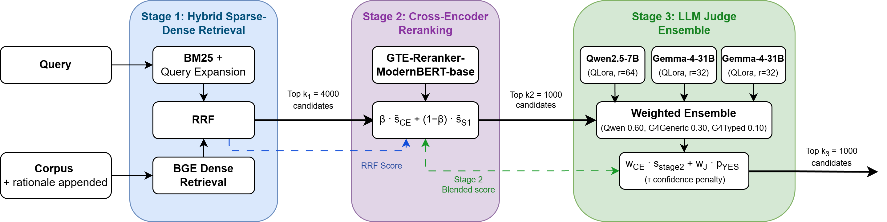

Overview
IROH (Insightful Ranking of Humor) is a three-stage retrieval system for JOKER Task 1 English at Conference and Labs of the Evaluation Forum (CLEF) 2026. Given a natural-language query describing a humor topic, it retrieves the relevant jokes, puns, and wordplay from a balanced corpus of humorous and non-humorous texts. This is a task that demands awareness of both semantic relevance and the linguistic typology that makes a text funny.
The pipeline pairs hybrid sparse-dense retrieval and cross-encoder reranking with a LoRA-adapted LLM judge ensemble trained by rationale distillation. It ranks first on the official leaderboard with 0.6347 MAP.

Motivation & Contributions
Challenge: Humor is ambiguous, culturally loaded, ironic, or carried by tone alone. The JOKER 2024 and 2025 tracks showed that standard retrieval pipelines fail when both topical relevance and humor are required. Prior leading approaches relied on post-hoc filtering or zero-shot LLM classification.
Our solution: A three-stage pipeline driven by a finetuned, humor-aware LLM judge, with training data built by distilling query-aware rationales and structured hard negatives from Gemma 4.
Key Contributions
- Rationale distillation under two prompt strategies: a lightweight generic pipeline and a structured typed pipeline. We show the simpler generic variant outperforms the richer typed one.
- Empirical study of structured hard negatives: augmentation inflates local-validation scores while degrading official performance in nearly every configuration, an effect we attribute to distribution shift.
- Extensive ablation: across components, model calibration and training-data composition matter at least as much as raw model capacity. The lighter model matches or beats its larger counterpart.
- Pipeline configuration analysis: candidate-pool size governs recall depth, the CE/judge blend weight is a secondary knob, and the judge is the dominant top-rank signal.
Our Approach
IROH processes a natural-language query against a corpus of candidate documents enriched with generated rationales. Scores are carried forward across stages and fused via weighted linear interpolation of min-max normalised signals, so each stage refines rather than discards the previous one.
Hybrid Sparse-Dense Retrieval
BM25 with query expansion is fused with BGE dense embeddings (bge-base-en-v1.5) via Reciprocal Rank Fusion (RRF) to cast a wide first-stage net of the top k₁ = 4000 candidates, carrying the RRF score forward.
Cross-Encoder Reranking
A finetuned GTE-Reranker-ModernBERT-Base cross-encoder rescores the candidates and is blended with the carried-forward RRF score, yielding the top k₂ = 1000 candidates.
LLM Judge Ensemble
Three LoRA-adapted judges with one Qwen2.5-7B (QLoRA, r=64) and two Gemma-4-31B variants (QLoRA, r = 32) finetuned on generic and typed rationales. These judges emit soft YES/NO scores combined by weighted voting (Qwen 0.60, Gemma-generic 0.30, Gemma-typed 0.10) into the final ranking of k₃ = 1000 documents.
Rationale Distillation
Because LLMs struggle to learn humor from labels alone, Gemma 4 generates a one-sentence, query-aware rationale for each query-document pair explaining why a text is or is not a relevant joke. For example, for the Tom Swifty “I bought myself fifty hamburgers, and I’ve only ten left,” said Tom with fortitude., the model explains the pun arises from misapplying “fortitude” (courage) to a quantitative statement.
Generic strategy
Uses a “General Wordplay” placeholder as query context for every example, keeping prompts lightweight. Generates three hard-negative types: literal rewrites, defused jokes, and wrong-topic jokes.
Typed strategy
Retrieves the actual query text and enumerates seven humor mechanisms (homophonic / homographic / compound puns, Tom Swifties, double entendres, malapropisms, ironic twists). Adds a fourth negative type: near-miss puns.
Both pipelines mirror positive and negative rationales so the judge sees a symmetric supervision signal.
Data Analysis
The JOKER Task 1 corpus consists of short English texts with binary relevance judgments. We combine the 2025 and 2026 editions, deduplicate recurring documents, and build a balanced set of jokes (label 1) and non-jokes (label 0). Surface features are useful but insufficient: punctuation density is the strongest single correlate of the label (r = 0.47), followed by quote presence and word count. The remaining difficulty lies in subtle, context-dependent wordplay no single feature captures.
| Feature | Joke (1) | Non-Joke (0) | ||
|---|---|---|---|---|
| Mean | Std | Mean | Std | |
| Word count | 10.55 | 4.97 | 18.89 | 17.71 |
| Avg. word length | 5.76 | 0.85 | 6.05 | 0.80 |
| Punctuation density | 0.424 | 0.303 | 0.179 | 0.118 |
| Has quotes (%) | 56.2 | - | 17.4 | - |
| Question marks | 0.126 | 0.337 | 0.072 | 0.258 |
Table 1. Linguistic feature statistics by label. Jokes are markedly shorter and far more dialogue-heavy (more quotes and punctuation) than non-jokes, but no surface feature alone separates the two classes.
Results
IROH reaches 0.6347 MAP, a substantial advance over prior editions of the task. The corpus expanded across editions, so these figures are indicative of progress rather than a strictly controlled benchmark.
| System | JOKER edition | MAP |
|---|---|---|
| Best official run, Task 1 English | 2024 Task 1 | 0.12 |
| Best English run (Qwen filter-explainer) | 2025 | 0.3501 |
| IROH (ours), Task 1 English | 2026 | 0.6347 |
Table 2. Progress on JOKER Task 1 English across editions.
Our Findings
The judge is the dominant signal
The rationale-distilled LLM judge drives ranking quality. Appending rationales to the first-stage BM25 index has a negligible effect (0.2876 vs. 0.2868 MAP without the judge).
Structured hard negatives hurt generalisation
Augmentation inflates local-validation scores but degrades official performance in nearly every configuration given by a distribution-shift effect between the local split and the broader task.
Lighter, better-calibrated models win
The Qwen2.5-7B judge on generic rationales (0.6055 MAP) beats every Gemma-4-31B configuration, and bge-base-en-v1.5 (768-dim) outperforms bge-en-icl (4096-dim) inside the full pipeline.
Generic rationales are better
The simpler generic prompt produces more consistent supervision than the structured typed prompt, with the advantage concentrated in the smaller model.
Ablation Studies
We report official CodaBench MAP throughout, computed with pytrec_eval over the full corpus. A held-out 20% query split is used only for training-time model selection.
Cross-Encoder Comparison
| Model | Augmentation | CodaBench MAP |
|---|---|---|
| MiniLM-L-6 | True | 0.1793 |
| MiniLM-L-6 | False | 0.2215 |
| BGE-Reranker-Base | True | 0.1229 |
| BGE-Reranker-Base | False | 0.0733 |
| GTE-Reranker-ModernBERT-Base | True | 0.2597 |
| GTE-Reranker-ModernBERT-Base | False | 0.2843 |
Table 3. Augmentation degrades the two strongest backbones. We adopt GTE-Reranker-ModernBERT-Base without augmentation as the Stage 2 cross-encoder.
Dense Embedder Comparison
| Model | Dimension | CodaBench MAP |
|---|---|---|
| bge-base-en-v1.5 | 768 | 0.2843 |
| bge-large-en-v1.5 | 1024 | 0.2823 |
| bge-m3 | 1024 | 0.2634 |
| bge-en-icl | 4096 | 0.3290 |
Table 4. bge-en-icl wins in isolation but at far higher cost (a 7B-parameter embedder); the smaller bge-base-en-v1.5 achieves higher MAP once paired with the full judge pipeline, so we select it.
Judge Comparison
| Model | Data | LoRA r | MAP |
|---|---|---|---|
| Qwen2.5-7B | typed | 64 | 0.4933 |
| Qwen2.5-7B | typed + aug | 64 | 0.2987 |
| Qwen2.5-7B | generic | 64 | 0.6055 |
| Qwen2.5-7B | generic + aug | 64 | 0.4994 |
| Gemma-4-31B | typed | 32 | 0.5740 |
| Gemma-4-31B | typed + aug | 32 | 0.4538 |
| Gemma-4-31B | generic | 32 | 0.5718 |
| Gemma-4-31B | generic + aug | 32 | 0.4267 |
Table 5. Augmentation consistently degrades performance and generic rationales beat typed for both judges. The smaller Qwen2.5-7B on generic rationales achieves the best single-judge MAP (0.6055), ahead of every Gemma-4-31B configuration, though Gemma is the stronger model per-variant on typed rationales.
Final Submission Configuration
| Knob | Value |
|---|---|
| Dense embedder | bge-base-en-v1.5 |
| Cross-encoder | GTE-Reranker-ModernBERT-Base (no augmentation) |
| Pool sizes | k₁ = 4000, k₂ = 1000, k₃ = 1000 |
| CE / judge blend | 0.30 / 0.70 |
| Ensemble weights | Qwen 0.60, Gemma-generic 0.30, Gemma-typed 0.10 |
| Penalty | τ = 0.30, λ = 0.85 (no measurable effect) |
Hardware
- Judge finetuning (QLoRA): NVIDIA A100 80GB
- Cross-encoder finetuning: NVIDIA RTX 4090
Limitations
English-only
Prompts, the humor mechanism taxonomy, and all finetuned components are English-only. Transfer to the other JOKER Task 1 languages would require retraining.
Binary judge
The YES/NO verdict forces a hard decision on what is arguably a relevance spectrum. Training on graded judgments could yield better-calibrated judge outputs.
Rationale ceiling
Rationales are accurate for clear wordplay but turn generic for culturally loaded or multi-layered humor, capping the supervision signal in exactly those cases.
Compute cost
The full pipeline needs multiple hours on multiple GPUs, and CodaBench submission limits forced OFAT sweeps in place of principled grid search for several components.
Contact & Acknowledgements
For questions and collaboration inquiries, please reach the authors through the GitHub repository or academic channels.
The research presented in this paper is supported in part by The Academy of Romanian Scientists, through the funding of the project “NetGuardAI: Intelligent system for harmful content detection and immunization on social networks” (AOȘR-TEAMS-IV).
Citation (Placeholder until the official proceedings entry is available)
@InProceedings{Ana_Maria_Luisa_Mocanu_2026_IROH_CLEF,
author = {Mocanu, Ana-Maria Luisa and Mocanu, Sebastian and Truică, Ciprian-Octavian and Apostol, Elena-Simona},
title = {IROH: Insightful Ranking Of Humor using Multi-Stage Hybrid Retrieval with Rationale-Distilled LLM Judges for JOKER 2026 Track Task 1 English},
booktitle = {Conference and Labs of the Evaluation Forum (CLEF), Joker 2026 Track Task 1 English},
month = {June},
year = {2026}
}